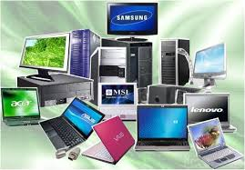
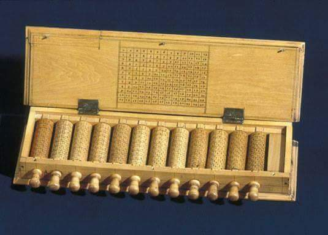
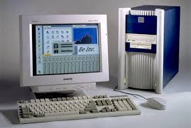
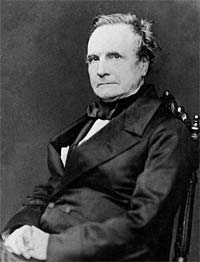
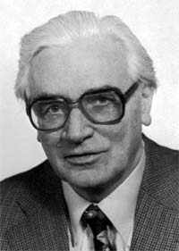

 |
Who built the first computer?
We could argue that the first computer was the abacus or its descendant, the silde rule, invented by William Oughtred in 1622
. But the first computer resembling today's modern machines was the Analytical Engine, a device conceived and designed by British mathematician
Charles Babbage between 1833 and 1871 . |
When was the first computer invented?
There is no easy answer to this question due to the many different classifications of computers.
The first meachanical computer,created by Charles Babbage in 1822,doesn't really resemble what most would consider a computer today.Therefore,this
document has been created with a listing of each of the computer firsts,starting with the Didderence Engine and leading up to the computers we use today.
Note:Early inventions which helped lead up to the computer,such as the abacus,calculator, and tablet machines, are not accounted
for in this document. |
 |
 |
Who is the father of the computer?
There are hundreds of people who have major contributions to the field of computing. The following sections detail the primary founding
fathers of computing, the computer, and the personal computer we all know and use today. |
Father of computing
Charles Babbage was considered to be the father of computing after his invention and concept of the Analytical Engine in 1837
. The Analytical Engine contined an Arithmentic Logic Unit (ALU) , basic flower control , and integrated memory
; hailed as the first general purpose computer concept. Unfortunately, because of funding issues, this computer was never built while Charles Babbage was
alive.
However, in 1910 Henry Babbage, Charles Babbage's youngest son was able to complete a portion of the machine that
could perform basic calculations.In 1991 , the London Science Museum completed a working version of the Analytical Engine No 2. This
version incorporated Babbage's refinements developed during the creation of the Analytical Engine.Although Babbage never completed his invention in his radical ideas and concepts of the
computer are what make him the father of computing. |
 |
 |
Father of the computer
There are several people who can be considered the father of the computer including Alan Turing, John Atanasoff, and John von
Neumann .However, for the purpose of this document we're going to be considering Konrad Zuse as the father of the computer
with his development of the Z1, Z2, Z3, and Z4.
In 1936 to 1938 Konrad Zuse created the Z1 in his parent's
living room. The Z1 consists of over 30,000 mental parts and is considered to be the first electro-mechanical binary programmable computer.In 1939
, the German military commissioned Zuse to build the Z2, which was largely based on the Z1. Later, he completed the Z3 on May of 1941
, the Z3 was a revolution computer for its time and is considered the first electromechanical and program-controlled computer. Finally, on July 12,
1950 , Zuse completed and shipped the Z4 computer, which is considered to be the first commercial computer. |
Father of the personal computer
Henry Edward Roberts
conined the "personal computer" and is considered to be the father of the modern personal computers after he released of the Altsir 8800
on December 19, 1974 . It was later publish on the front cover of Popular Electronics in 1975 making it an overnight
success. The computer was available as a kit for $439 or assembled for $621 and had several additional add-ons such as a memory board and interface boards.
By Augest 1975,over 5,000 Altair 8800 personal computer were sold; starting the personal computer revolution. |
|
|